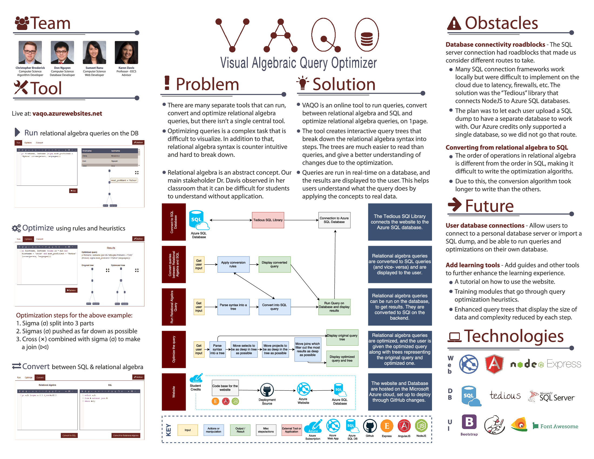

VAQO is an interactive tool that helps you learn relational algebra by executing them on a real database, optimizing using heuristics and converting between SQL and Relational Algebra. Here is an overview of the main functions:
Run: You can run relational algebra queries on a database in real-time and view the query results along with a tree-depiction of the query.
Optimize: This tool applies optimization heuristics to relational algebra queries to give you the most optimal format to execute it. It also shows you the before and after in the form of a tree for intuitive visualization.
Convert: You can convert queries between Relational Algebra and SQL using this functionality.
For additional help, please refer to the User Guide or FAQ section.
VAQO was developed as a University of Cincinnati Computer Science Senior Design project, by Chris Broderick, Don Nguyen and Sumeet Ranu. The main goal of the tool was to provide Dr. Karen Davis, the project advisor and professor, a better way to teach relational algebra concepts in her database classes.
The complexity and importance of relational algebra in different fields is the main reason this project was pursued. There weren't any central tools to run, optimize and convert queries with visualizations. This project brought all of those functions together into one tool to aid in teaching and learning.
Project source can be found on the VAQO Github repository.
To contact or connect with our team, please visit the Contact section.
Here is the VAQO project poster for the 2017 Computer Science Senior Design Expo.
